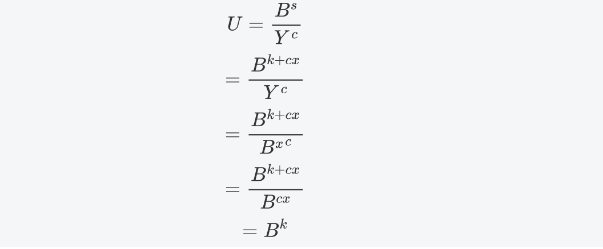
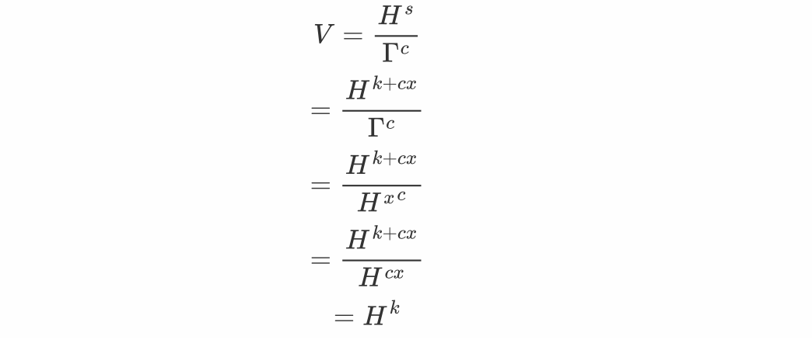

Libra中采用的椭圆曲线是ED25519,而不是像以太坊比特币使用的是secp256k1. 虽然有不同,但是从本质上来说他们都是椭圆曲线,基本性质都是完全相同的.因此适用于S256曲线的VRF算法在Libra中也是相通的.
1. ED25519
http://ed25519.cr.yp.to/Ed25519是一个数字签名算法，签名和验证的性能都极高， 一个4核2.4GHz 的 Westmere cpu，每秒可以验证 71000 个签名，安全性极高，等价于RSA约3000-bit。签名过程不依赖随机数生成器，不依赖hash函数的防碰撞性，没有时间通道攻击的问题，并且签名很小，只有64字节，公钥也很小，只有32字节。 部署情 况：http://ianix.com/pub/ed25519-deployment.html
同时在zcash中签名使用了ED25519,也就是在隐私交易方面,ED25519也有其独特应用之处,这应该也是主打隐私牌的Libra采用它的原因.
2. 什么是VRF
内容主要来自我的另一篇文章一篇文章搞懂VRF
VRF全称是verifiable random function ,也就是可验证随机数. 他有两个特性, 他产生的是随机数,第二还是可验证的.
我直接引用维基百科上的VRF,就是说针对一个输入x,一个私钥SK的拥有者可以计算和证明. 依据证明(proof)和SK对应的公钥PK(),任何人都可以验证y是被正确计算的,但是不能知道SK是什么.
原文中提到了使用双线性映射来做这个事情,当然VRF可以有很多种不同的实现,只要满足上面提出的条件即可.一个是随机数,另一个是可验证.
简单解释一下:
- 验证人只知道x,在SK持有人没有广播之前不知道随机数是什么
- SK持有人无法伪造随机数,一旦x确定,随机数也确定了. 这就是所谓的随机数(除了SK持有人之外,其他任何人事先不知道) 可验证(知道PK的任何人都知道SK生成的随机数是否合规)
3. Libra中VRF的实现
Libra中对于VRF的实现依据来自于 Verifiable Random Functions (VRFs) draft-irtf-cfrg-vrf-04 感兴趣的可以读读这篇标准草案
3.1 推导中用到的符号的含义
B:ED25519曲线中的基点 SK:私钥 x:可以认为是私钥,或者有私钥推导出来. Y:公钥,其中 大小的字母都表示曲线上的点,小写字母表示大整数 另外需要知道在ECDSA中: 1.如果一个整数乘以一个点,实际上表示出来就是指数,比如x*B= 2. 两个点相减则表示除法,比如H-B=
3.2 生成过程
也就是证明方按照生成一个随机数,并给出证明,这个随机数就是按照我们确定的规则生成的.
3.2.1 H1:把任意信息映射到曲线上的点
思路也很简单,将Hash(m)(注意是256位hash)作为曲线上的X,然后带入上述椭圆曲线公式,求出相应的Y即可. 具体对应代码中就是hash_to_curve
//self是私钥,alpha就是VRF的输入源
pub(super) fn hash_to_curve(&self, alpha: &[u8]) -> EdwardsPoint {
let mut result = [0u8; 32];
let mut counter = 0;
let mut wrapped_point: Option<EdwardsPoint> = None;
while wrapped_point.is_none() {
result.copy_from_slice(
&Sha512::new()
.chain(&[SUITE, ONE])
.chain(self.as_bytes())
.chain(&alpha)
.chain(&[counter])
.result()[..32], //这里用的是sha512,但是只取了前半部分,因此是256位
);
wrapped_point = CompressedEdwardsY::from_slice(&result).decompress();
counter += 1;
}
wrapped_point.unwrap().mul_by_cofactor()
}
2
3
4
5
6
7
8
9
10
11
12
13
14
15
16
17
18
19
20
21
3.2.2 H2: 将一系列点Hash为一个大整数
这个就更简单了,将这些点序列化,然后Hash,就得到一个大整数. 只是需要注意的是这个大整数需要模上曲线的阶.
pub(super) fn hash_points(points: &[EdwardsPoint]) -> ed25519_Scalar {
let mut result = [0u8; 32];
let mut hash = Sha512::new().chain(&[SUITE, TWO]);
for point in points.iter() {
hash = hash.chain(point.compress().to_bytes());
}
result[..16].copy_from_slice(&hash.result()[..16]);
ed25519_Scalar::from_bits(result) //这里实际上对基点就是取模
}
2
3
4
5
6
7
8
9
3.2.3 ECVRF_nonce_generation
根据私钥和待签名信息导出一个确定的大整数. 这里的nonce是从私钥推导出来的,h_point则是下文中用到的H.
pub(super) fn nonce_generation_bytes(nonce: [u8; 32], h_point: EdwardsPoint) -> [u8; 64] {
let mut k_buf = [0u8; 64];
k_buf.copy_from_slice(
&Sha512::new()
.chain(nonce)
.chain(h_point.compress().as_bytes())
.result()[..],
); //生成思路也很简单,就是Hash一下,就可以得到一个大整数
k_buf
}
2
3
4
5
6
7
8
9
10
3.2.4 生成随机数以及证明
H=H1(\alpha) \\ k=ECVRF\_nonce\_generation(SK,H) \\ \Gamma =H^x \\ c=H2(H,\Gamma,B^k,H^k) \\ s=k+cx然后将Proof={,c,s}发给验证方. 证明其实就是想证明我这里的,而不是通过什么其他方式得到的.
/// A longer private key which is slightly optimized for proof generation.
///
/// This is similar in structure to ed25519_dalek::ExpandedSecretKey. It can be produced from
/// a VRFPrivateKey.
pub struct VRFExpandedPrivateKey {
pub(super) key: ed25519_Scalar,
pub(super) nonce: [u8; 32],
}
/// Produces a proof for an input (using the expanded private key)
pub fn prove(&self, pk: &VRFPublicKey, alpha: &[u8]) -> Proof {
let h_point = pk.hash_to_curve(alpha);
//k实际上是一个随机数,这里采用RFC6979中的规则是为了让每次生成的proof都完全一样,
// 比特币以太坊签名中也是这么使用的. 但是如果你非要用一个随机数,别人也没办法,
// 并且完全行得通
let k_scalar =
ed25519_Scalar::from_bytes_mod_order_wide(&nonce_generation_bytes(self.nonce, h_point));
//nonce由私钥hash后生成,可以认为私钥确定了,nonce就确定了,而h_point和签名中的用法是一样的,
// 就是待签名信息 因此原文中共识是这样的:k = ECVRF_nonce_generation(SK,
// h_string)
//Gamma = x*H
let gamma = h_point * self.key;
// c = ECVRF_hash_points(H, Gamma, k*B, k*H)
let c_scalar = hash_points(&[
h_point,
gamma,
ED25519_BASEPOINT_POINT * k_scalar,
h_point * k_scalar,
]);
//s = (k + c*x) mod q
//proof={gama,c,s}
Proof {
gamma, //这也是VRF生成的随机数
c: c_scalar,
s: k_scalar + c_scalar * self.key,
}
}
2
3
4
5
6
7
8
9
10
11
12
13
14
15
16
17
18
19
20
21
22
23
24
25
26
27
28
29
30
31
32
33
34
35
36
37
需要补充说明的是验证方不可能知道:
- 私钥也就是x
- k,这是证明方用ECVRF_nonce_generation生成的 虽然随机数用也就是曲线上的一个点来表示,但是很容易通过Hash计算转换成一个大整数
3.3 验证的过程
已知信息:
- Y:公钥
- :VRF输入源
- Proof:{,c,s}
如果c'和c相等,则认可就是证明方按照规则生产的随机数.
这里在计算c'和证明方计算c的过程不一样的对方只有两处:
- 用U来代替了,
- 用V代替了
接下来我们要证明,两者都是相等的.
3.3.1 证明U=
U=\frac {B^s} {Y^c} \\
=\frac {B^{k+cx}} {Y^c} \\
=\frac {B^{k+cx}} {{B^x}^c} \\
=\frac {B^{k+cx}} {B^{cx}} \\
=B^k
2
3
4
5

3.3.2 证明V=
V=\frac {H^s} {\Gamma^c} \\
= \frac {H^{k+cx}} {\Gamma^c} \\
= \frac {H^{k+cx}} {{H^x}^c} \\
= \frac {H^{k+cx}} {H^{cx}} \\
= H^k
2
3
4
5

3.3.3 实现过程
/// An ECVRF public key
#[derive(Serialize, Deserialize, Deref, Debug, PartialEq, Eq)]
pub struct VRFPublicKey(ed25519_PublicKey);
/// Given a [`Proof`] and an input, returns whether or not the proof is valid for the input
/// and public key
pub fn verify(&self, proof: &Proof, alpha: &[u8]) -> Result<()> {
//同样将已知的确定信息alpha映射到H点
let h_point = self.hash_to_curve(alpha);
//PK:是公钥
let pk_point = CompressedEdwardsY::from_slice(self.as_bytes())
.decompress()
.unwrap();
//c' = ECVRF_hash_points(H, Gamma, U, V)
let cprime = hash_points(&[
h_point,
proof.gamma,
ED25519_BASEPOINT_POINT * proof.s - pk_point * proof.c, //U=s*B - c*Y
h_point * proof.s - proof.gamma * proof.c, //V= s*H - c*Gamma
]);
//相等则有效,不等则无效
if proof.c == cprime {
Ok(())
} else {
bail!("The proof failed to verify for this public key")
}
}
2
3
4
5
6
7
8
9
10
11
12
13
14
15
16
17
18
19
20
21
22
23
24
25
26
27
28
4. 结束语
VRF是一个好东西,给区块链带来了可预测的伪随机性. 不过在Libra中号称自己使用了VRF,并且也在代码中看到了实现.就是没有找到使用的地方,可能是我的找法不对? 我看的代码版本是d324ce75cc9bcc6777a2b45c756f4df2f47c4ef3